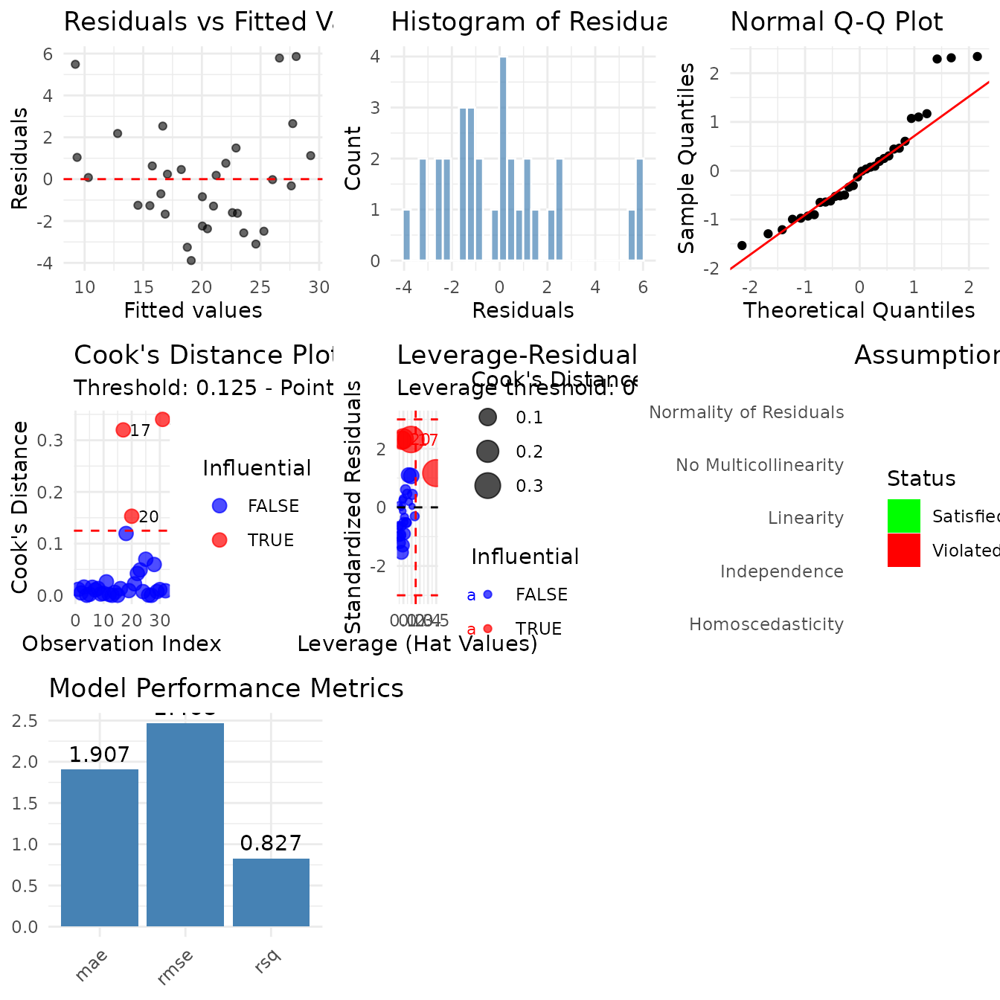
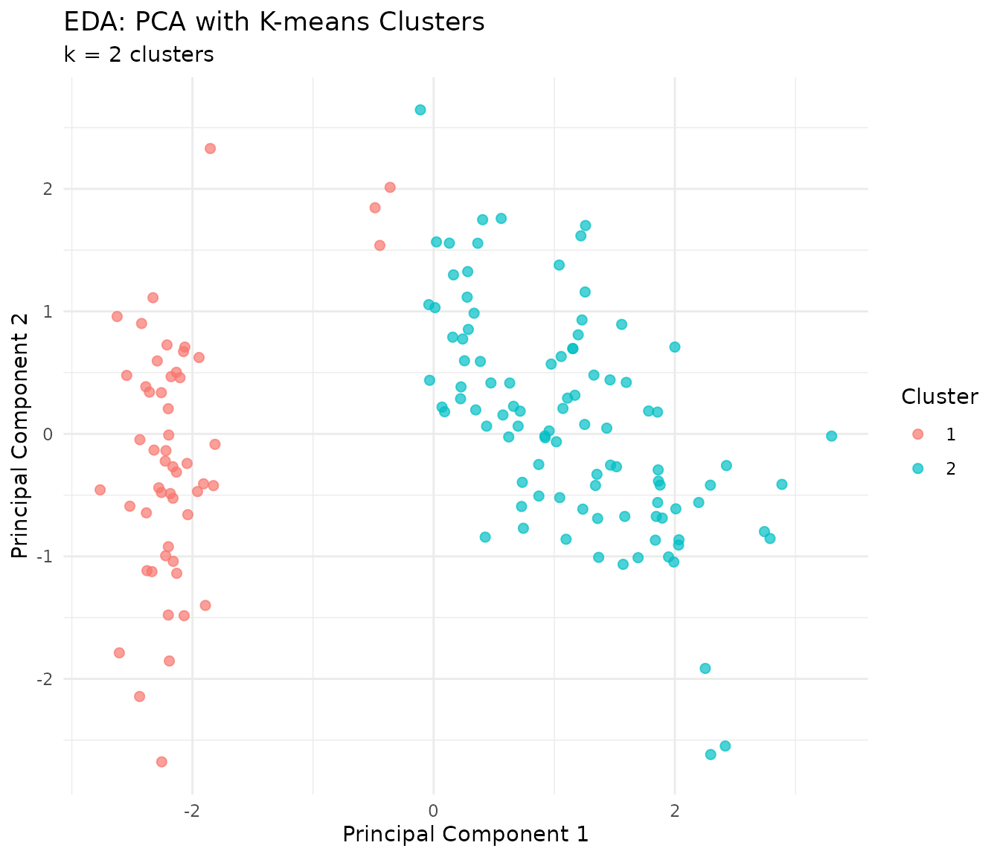

library(tidylearn)
library(dplyr)
#>
#> Attaching package: 'dplyr'
#> The following objects are masked from 'package:stats':
#>
#> filter, lag
#> The following objects are masked from 'package:base':
#>
#> intersect, setdiff, setequal, unionOverview
A model that fits is not the same as a model you should use. These functions answer four questions:
-
Do the assumptions hold?
tl_check_assumptions() -
Which observations drove the fit?
tl_influence_measures(),tl_detect_outliers() -
Is the difference between two models real?
tl_compare_cv(),tl_test_model_difference() -
Are there interactions I have not modelled?
tl_test_interactions(),tl_interaction_effects()
tl_explore() runs an unsupervised sweep over a dataset
before you model it at all.
We use a linear model throughout, because that is where assumption checking has teeth.
model <- tl_model(mtcars, mpg ~ wt + hp + disp, method = "linear")Checking Assumptions
tl_check_assumptions() runs six checks and returns a
verdict on each.
assumptions <- tl_check_assumptions(model, verbose = FALSE)
names(assumptions)
#> [1] "linearity" "independence" "homoscedasticity"
#> [4] "normality" "multicollinearity" "outliers"
#> [7] "overall"
assumptions$overall
#> $status
#> [1] "5 assumption(s) appear to be violated. See details."
#>
#> $n_checked
#> [1] 6
#>
#> $n_violated
#> [1] 5
#>
#> $n_satisfied
#> [1] 1Each entry carries the test that was run, the verdict, and what to do about it. Nothing here is a pass/fail gate — the recommendation is a prompt, not an instruction.
assumptions$normality
#> $assumption
#> [1] "Normality of Residuals"
#>
#> $check
#> [1] FALSE
#>
#> $details
#> [1] "Shapiro-Wilk test p-value: 0.033"
#>
#> $recommendation
#> [1] "Residuals may not be normally distributed. Consider transformations or robust regression."
assumptions$multicollinearity
#> $assumption
#> [1] "No Multicollinearity"
#>
#> $check
#> [1] FALSE
#>
#> $details
#> [1] "Maximum VIF: 7.3245"
#>
#> $recommendation
#> [1] "Multicollinearity detected. Consider removing or combining highly correlated predictors."A compact table of every check:
checks <- c("linearity", "independence", "homoscedasticity",
"normality", "multicollinearity", "outliers")
data.frame(
assumption = vapply(checks, function(x) assumptions[[x]]$assumption,
character(1)),
holds = vapply(checks, function(x) isTRUE(assumptions[[x]]$check),
logical(1)),
detail = vapply(checks, function(x) assumptions[[x]]$details, character(1)),
row.names = NULL
)
#> assumption holds
#> 1 Linearity FALSE
#> 2 Independence FALSE
#> 3 Homoscedasticity TRUE
#> 4 Normality of Residuals FALSE
#> 5 No Multicollinearity FALSE
#> 6 No Influential Outliers FALSE
#> detail
#> 1 RESET-style test on powers of the fitted values: p-value = 0.001944
#> 2 Durbin-Watson statistic: 1.3673
#> 3 Breusch-Pagan test p-value: 0.8143
#> 4 Shapiro-Wilk test p-value: 0.033
#> 5 Maximum VIF: 7.3245
#> 6 4 influential observations detecteddisp correlating with both wt and
hp is what drives the VIF here, and it is the kind of thing
that is invisible in a coefficient table.
The dashboard
tl_diagnostic_dashboard() draws the standard panels in
one grid.
tl_diagnostic_dashboard(model)
#> TableGrob (3 x 3) "arrange": 7 grobs
#> z cells name grob
#> residuals_vs_fitted 1 (1-1,1-1) arrange gtable[layout]
#> residual_hist 2 (1-1,2-2) arrange gtable[layout]
#> qq_plot 3 (1-1,3-3) arrange gtable[layout]
#> cook_distance 4 (2-2,1-1) arrange gtable[layout]
#> leverage_plot 5 (2-2,2-2) arrange gtable[layout]
#> assumptions 6 (2-2,3-3) arrange gtable[layout]
#> performance 7 (3-3,1-1) arrange gtable[layout]Switch off any section you do not want with
include_influence, include_assumptions or
include_performance.
Influence
tl_influence_measures() returns one row per observation
with Cook’s distance, leverage, DFFITS, standardised and studentised
residuals, DFBETAS per coefficient, and a flag for each.
influence <- tl_influence_measures(model)
dim(influence)
#> [1] 32 15
influence %>%
filter(is_influential) %>%
select(observation, cooks_distance, leverage, dffits, std_residual)
#> observation cooks_distance leverage dffits std_residual
#> Chrysler Imperial 17 0.3199707 0.19279000 1.2354290 2.314921
#> Fiat 128 18 0.1196019 0.08356445 0.7534560 2.290547
#> Toyota Corolla 20 0.1529771 0.10039528 0.8565855 2.341599
#> Maserati Bora 31 0.3402911 0.49906562 1.1746842 1.168872The flags use conventional cutoffs, which you can override with
threshold_cook, threshold_leverage and
threshold_dffits.
The DFBETAS columns say which coefficient an observation moved, which is usually the more useful question:
influence %>%
select(observation, starts_with("dfbetas_")) %>%
arrange(desc(abs(dfbetas_wt))) %>%
head(4)
#> observation dfbetas__Intercept_ dfbetas_wt dfbetas_hp
#> Chrysler Imperial 17 -0.8449206 0.7354152 0.01567383
#> Lotus Europa 28 0.4079171 -0.3471834 0.07737080
#> Toyota Corolla 20 0.6621570 -0.3090322 -0.18331158
#> Pontiac Firebird 25 0.2415733 -0.3073564 -0.27946896
#> dfbetas_disp
#> Chrysler Imperial -0.22337876
#> Lotus Europa 0.12553686
#> Toyota Corolla 0.08073859
#> Pontiac Firebird 0.46567141Refit without the influential rows
The point of the exercise is to see whether the conclusion survives.
keep <- !influence$is_influential
refit <- tl_model(mtcars[keep, ], mpg ~ wt + hp + disp, method = "linear")
data.frame(
term = names(coef(model$fit)),
all_rows = round(unname(coef(model$fit)), 4),
without_influential = round(unname(coef(refit$fit)), 4)
)
#> term all_rows without_influential
#> 1 (Intercept) 37.1055 37.3163
#> 2 wt -3.8009 -4.2722
#> 3 hp -0.0312 -0.0399
#> 4 disp -0.0009 0.0071
sum(!keep)
#> [1] 4If dropping a handful of rows moves a coefficient materially, that coefficient describes those rows rather than the population you sampled.
Outliers in the Data
tl_influence_measures() is about a fitted model.
tl_detect_outliers() works on the data itself, before or
independently of any fit.
outliers <- tl_detect_outliers(
mtcars,
variables = c("mpg", "hp", "wt"),
method = "iqr",
plot = FALSE
)
outliers$outlier_counts$total
#> [1] 5
outliers$outlier_counts$by_variable
#> mpg hp wt
#> 1 1 3
mtcars[outliers$outlier_indices, c("mpg", "hp", "wt")]
#> mpg hp wt
#> Cadillac Fleetwood 10.4 205 5.250
#> Lincoln Continental 10.4 215 5.424
#> Chrysler Imperial 14.7 230 5.345
#> Toyota Corolla 33.9 65 1.835
#> Maserati Bora 15.0 335 3.570method also takes "zscore" and
"mahalanobis". The first two treat each variable
separately; Mahalanobis distance accounts for the correlation between
them, so it finds points that are unremarkable on every single axis and
unusual in combination.
mahal <- tl_detect_outliers(
mtcars,
variables = c("mpg", "hp", "wt"),
method = "mahalanobis",
plot = FALSE
)
mahal$outlier_indices
#> [1] 17 31Set plot = TRUE to get a ggplot2 object back in
$plot.
Comparing Models
A difference in a single held-out score is not evidence.
tl_compare_cv() scores several fitted models over the same
folds.
simple <- tl_model(mtcars, mpg ~ wt, method = "linear")
full <- tl_model(mtcars, mpg ~ wt + hp + disp, method = "linear")
tree <- tl_model(mtcars, mpg ~ wt + hp + disp, method = "tree")
cv <- tl_compare_cv(
mtcars,
models = list(simple = simple, full = full, tree = tree),
folds = 5,
metrics = c("rmse", "rsq")
)
names(cv)
#> [1] "fold_metrics" "summary"
cv$summary
#> # A tibble: 6 × 6
#> model metric mean_value sd_value min_value max_value
#> <chr> <chr> <dbl> <dbl> <dbl> <dbl>
#> 1 full rmse 2.93 0.708 2.17 3.93
#> 2 full rsq 0.612 0.248 0.262 0.859
#> 3 simple rmse 3.09 0.720 1.82 3.59
#> 4 simple rsq 0.530 0.414 -0.169 0.820
#> 5 tree rmse 4.42 1.60 2.21 6.58
#> 6 tree rsq 0.148 0.527 -0.501 0.767Per-fold scores are kept as well, which is what makes a test possible:
head(cv$fold_metrics)
#> # A tibble: 6 × 4
#> metric value fold model
#> <chr> <dbl> <int> <chr>
#> 1 rmse 3.35 1 simple
#> 2 rsq 0.820 1 simple
#> 3 rmse 1.82 2 simple
#> 4 rsq 0.808 2 simple
#> 5 rmse 3.29 3 simple
#> 6 rsq 0.481 3 simpleIs the difference real?
tl_test_model_difference() compares each model against a
baseline using the per-fold scores.
tl_test_model_difference(
cv,
baseline_model = "simple",
metric = "rmse",
test = "t.test"
)
#> metric model baseline mean_diff p_value p_adj
#> 1 rmse full simple -0.1657558 0.6102364 0.6102364
#> 2 rmse tree simple 1.3264236 0.1504542 0.3009083With five folds this has very little power, so treat a
non-significant result as “these folds do not separate the models”
rather than as evidence they are equivalent.
test = "wilcox.test" drops the normality assumption, which
matters more at small fold counts than the loss of power costs you.
Interactions
tl_test_interactions() fits each candidate interaction
and reports whether it earns its degrees of freedom.
interactions <- tl_test_interactions(
mtcars, mpg ~ wt + hp + disp,
all_pairs = TRUE
)
interactions
#> var1 var2 p_value significant delta_r2 f_statistic
#> 1 wt hp 0.000950209 TRUE 0.05845233 13.75810
#> 3 hp disp 0.001238835 TRUE 0.05631176 13.01147
#> 2 wt disp 0.003839687 TRUE 0.04681464 10.00398delta_r2 is the more useful column: a p-value tells you
the term is detectable, delta_r2 tells you whether it is
worth carrying.
Restrict the search with numeric_only,
categorical_only or mixed_only, or name a
single pair with var1 and var2.
Reading an interaction
Once a term is in the model, tl_interaction_effects()
says what it does at different levels of the moderator.
model_int <- tl_model(mtcars, mpg ~ wt * hp, method = "linear")
effects <- tl_interaction_effects(model_int, var = "wt", by_var = "hp")
effects$slopes
#> by_value by_label slope slope_se
#> Q0 52.0 Q0 -6.768521 5.695734e-16
#> Q25 96.5 Q25 -5.529278 4.387243e-16
#> Q50 123.0 Q50 -4.791302 6.071491e-16
#> Q75 180.0 Q75 -3.203958 4.018576e-16
#> Q100 335.0 Q100 1.112505 4.116338e-16The slope of mpg on wt weakens as
hp rises — extra weight costs less fuel economy in a
high-powered car, which already had little to lose.
slope_se describes the straight line fitted to the
prediction grid rather than the sampling uncertainty of the marginal
effect — for a linear model the grid is exactly linear, so it is near
zero by construction. Use summary(model_int$fit) for
inference on the interaction coefficient.
summary(model_int$fit)$coefficients
#> Estimate Std. Error t value Pr(>|t|)
#> (Intercept) 49.80842343 3.60515580 13.815887 5.005761e-14
#> wt -8.21662430 1.26970814 -6.471270 5.199287e-07
#> hp -0.12010209 0.02469835 -4.862758 4.036243e-05
#> wt:hp 0.02784815 0.00741958 3.753332 8.108307e-04tl_auto_interactions() does the search and the refit in
one step, returning a model with the surviving interactions already in
the formula:
auto <- tl_auto_interactions(mtcars, mpg ~ wt + hp + disp)
auto$spec$formula
#> mpg ~ wt + hp + disp + wt:hp + hp:disp + wt:dispExploring Before Modelling
tl_explore() runs PCA, picks a cluster count, clusters,
and computes a distance summary in one call. It is a first look at a
dataset, not a diagnostic of a fit.
eda <- tl_explore(iris, response = "Species", max_components = 4, k_range = 2:5)
#> Running Exploratory Data Analysis...
#> [1/4] PCA analysis...
#> [2/4] Finding optimal clusters...
#> [3/4] Clustering analysis...
#> [4/4] Distance analysis...
#> EDA complete!
names(eda)
#> [1] "data" "response" "pca" "optimal_k" "kmeans" "hclust"
#> [7] "summary"
eda$optimal_k
#> $k_values
#> [1] 2 3 4 5
#>
#> $scores
#> [1] 0.6810462 0.5528190 0.4980505 0.4887489
#>
#> $best_k
#> [1] 2
#>
#> $best_score
#> [1] 0.6810462
get_pca_variance(eda$pca)
#> # A tibble: 4 × 5
#> component sdev variance prop_variance cum_variance
#> <chr> <dbl> <dbl> <dbl> <dbl>
#> 1 PC1 1.71 2.92 0.730 0.730
#> 2 PC2 0.956 0.914 0.229 0.958
#> 3 PC3 0.383 0.147 0.0367 0.995
#> 4 PC4 0.144 0.0207 0.00518 1
plot(eda)
A Checklist
For a linear model, in order:
-
tl_check_assumptions()— six checks, with the reason each one failed. -
tl_influence_measures()— refit without the flagged rows and see whether the coefficients hold. -
tl_test_interactions()— the effect you assumed was additive may not be. -
tl_compare_cv()thentl_test_model_difference()— before preferring one model over another.
For tree-based and other non-parametric methods, steps 1 and 3 do not
apply; step 2 is available through tl_detect_outliers() on
the data, and step 4 works unchanged.